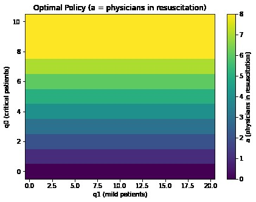

Dynamic Physician Allocation with Markov Decision Processes
Graduate course project · Clemson University
Problem
An emergency department must decide, as patients arrive, how many physicians to assign to resuscitation for critical patients and how many to general consultation for mild patients. Waiting is costlier for critical patients, but mild-patient queues also build up.
Methods
- Modeled arrivals and services as Poisson processes and the system as a continuous-time MDP, with states giving the number of critical and mild patients and actions giving the number of physicians (0–8) assigned to resuscitation.
- Uniformized the model into an equivalent discrete-time MDP with an infinite-horizon discounted cost that penalizes queue lengths and overload.
- Implemented value iteration, policy iteration, modified policy iteration, and the dual linear program (in Gurobi) on the same transition model.
- Generated synthetic instances from 676 to 5,041 states and compared iterations, runtime, value-function error, and policy agreement.
Findings
- Policy iteration was the fastest and most stable, converging in 8–15 steps even above 5,000 states; value iteration needed up to 2,200 sweeps.
- Value iteration and the linear program matched policy iteration's value function to within 10⁻⁷, but the linear program took over 6,000 seconds at 5,041 states.
- The optimal policy assigns more physicians to resuscitation as critical patients accumulate, largely regardless of the mild queue.


Methods & tools
Markov Decision ProcessesDynamic ProgrammingQueueing TheoryLinear ProgrammingGurobiPython